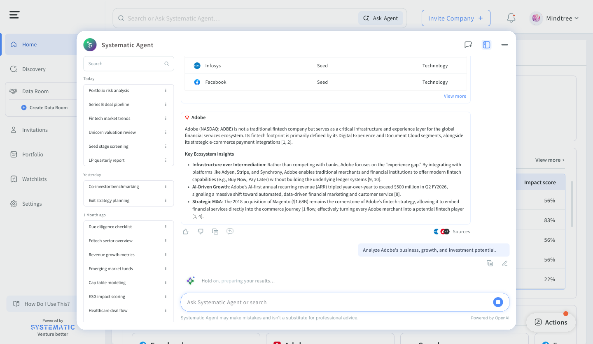

Low effort and familiar, but they didn’t fix the core problem. Investors still needed upfront knowledge to use them right.
Designing a context-aware AI assistant for investor workflows—so teams reach actionable insight under pressure, not just more data.

It helps institutional and angel investors replace fragmented Excel workflows with a unified, data-driven system.
It wasn’t a data problem. It was a synthesis problem. The interface demanded precision before investors had even formed their thesis.

Low effort and familiar, but they didn’t fix the core problem. Investors still needed upfront knowledge to use them right.
High potential impact, but it risked cold-start failure for new investors and felt like opaque “magic.” Skeptical institutional users wouldn’t trust it right away. We parked this for Phase 2.
High impact, and it handled ambiguous intent naturally. It met investors at the exploration stage instead of after. Higher engineering complexity, but it hit the biggest friction point, so we went with it.
→ We built Conversational Discovery first, since it addressed the earliest and biggest drop-off point.
The AI Insights Engine came second, once discovery was fixed — targeting the next-highest friction point at the evaluation stage.


Assistant opens progressively to preserve focus and avoid layout shock in dense data views.
Users can move between classic search and AI mode without losing work-in-progress context.
Subtle status updates communicate model progress and confidence without noisy interruptions.
40%
Reduction in cognitive load
3x
Faster discovery, from query to shortlist
85%
User satisfaction
12% increase in month-over-month retention.